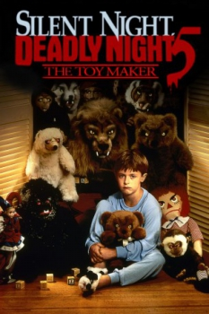

Country:United States, 90 minutes
Spoken languages:
Genres:Horror, Sci-Fi
Director(s):Martin Kitrosser
Writer(s):Brian Yuzna, Martin Kitrosser
Video Codec:Unknown
Number: 2179


Certification:R
Storyline:
A young boy sees his father killed by a toy that was anonymously delivered to his house. After that, he is too traumatized to speak, and his mother must deal with both him and the loss of her husband. Meanwhile, a toy maker named Joe Peto builds some suspicious-looking toys, and a mysterious man creeps around both the toy store and the boy's house...but who is responsible for the killer toys?
Cast:

Medium: Original DVD,
Loaned: No
Aspect ratio: Unknown